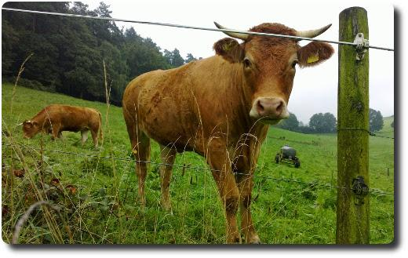

Hallo Nikola
Hallo Welt, hallo Nikola!
Hallo Welt, hallo Nikola!
Mein erster längerer Blog-Post ist fertig: Unsere Feldahorn-Hecke - ein Jahresrückblick
Dieser ist auf dem Blog meiner besseren Hälfte erschienen.

Online-Shopping und Hunger, eine fatale Kombination. üòÑ Freu mich schon auf's Backen!
Ab heute druckt die Frankfurter Rundschau in ihrer Printausgabe die Entwicklung des Global Challenges Index und der enthaltenen Aktien ab, um, Zitat: "...es unseren Lesern erleichtern, verantwortungsvoll in Aktien zu investieren. Außerdem werden wir die im GCX notierten Unternehmen journalistisch begleiten, um unseren Lesern zu zeigen, was nachhaltiges Wirtschaften in der Praxis bedeutet.“
Ich finde, dies ist ein toller Schritt von der Frankfurter Rundschau und bin auf die kommenden Artikel zu diesem Thema sehr gespannt. Denn wie Geldanlage und Nachhaltigkeit gut zusammengehen, hat mich schon immer interessiert. Ich denke, die meine Tageszeitung kann mir hier viele gute Tipps geben.
Hier der Link zum Aktienindex: http://gcindex.boersenag.de/de/index.php
Letzte Woche waren wir auf Urlaubsreise in Sachsen unterwegs - meinem Heimatbundesland (Mehr Bilder gibt es davon später). Im Raum Leipzig gibt es zur Zeit wieder Reformationsbrötchen beim Bäcker zu kaufen - im Gedenken an die Reformation der Kirche durch Martin Luther.
Dieses Brötchen ist ein Hefegebäck mit saftigem Teig, der meist Rosinen, Zitronat und Orangeat enthält. In der Mitte muss immer ein Klecks rote Marmelade sein. Sonst ist es kein echtes Reformationsbrötchen. Dieser Klecks soll ja die Lutherrose darstellen (siehe Wikipedia).
Wir hatten unsere Brötchen bei Lukas Bäcker auf dem Leipziger Hauptbahnhof gekauft. Die waren wirklich superlecker, ich hätte gern noch mehr davon gehabt!

Gestern haben wir eine Wanderung durch den Odenwald unternommen. Es ging von Hetzbach über Feldwege an Kuhweiden vorbei in den vernebelten Wald hinein. Dort gabs eine Menge Pilze zu sehen.
Die Luft war herrlich frisch und sauber. Nach zwei Stunden sind wir in Beerfelden angekommen und haben uns den Zwölf-Röhren-Brunnen und die Stadtkirche angeschaut. Schließlich ging es in einem großen Bogen wieder zurück nach Hetzbach.
Unterwegs haben wir den ältesten und besterhaltenen Galgen in Deutschland gesehen: https://de.wikipedia.org/wiki/Beerfelder_Galgen. Die letzte Hinrichtung fand dort 1804 statt.
Endlich mal wieder zusammen einen Kuchen gebacken:

Mmhhhh, was kann es besseres geben, als sich am Wochenende mit einem superleckeren Zwetschgenkuchen zu verwöhnen? Hach ja.... :-)

... soll aber Kaffee sein!
Heute haben wir seit langem wieder den Altstadtmarkt in Langen besucht und zum ersten Mal die Pilzpfanne mit Semmelknödel des hiesigen Pilzverkäufers probiert. Fazit: Sehr lecker. Aber auch die Rostbratwurst war wieder super. Außerdem haben wir noch super-knackige Gurken vom lokalen Bauern gekauft, die den Tag nicht lange überstanden. Miam!
Der kurze Regenschauer (siehe Foto) tat der guten Stimmung unter den Marktbesuchern (denen der Wein auch heute wieder zu schmecken schien) keinen Abbruch. Viele zückten die Regenschirme und -capes: So konnte das "Gebabbel" weitergeh'n...
Gestern in der Sneak Preview gesehen:
Hectors Reise oder die Suche nach dem Glück
Ein sehr schöner Film zum Lachen, Nachdenken und mit dem Partner Händchen halten! :-) Seit langer Zeit mal wieder tolles "Gefühlskino".